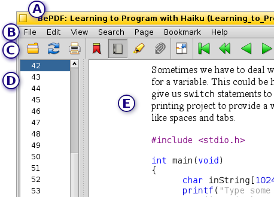

Interface grafica utente
Interface grafica utente
BePDF presenta un ambiente elegante, però simple, che corrisponde davvero in forma e funzione alla inerente bellezza del BeOS.
Disposizione

(A) Barra del titolo
La barra del titolo BePDF consiste del titiolo del file eseguito del nome del file tra parentesi. Nel caso dove nessun titolo sia stato assegnato, BePDF solo visualizza il nome file senza parentesi.
(B) Barra dei menù
La barra principale dei menù abilita l'utente a effettuare le operazione al file, editare le funzioni, trovare funzioni, navigare tra il documento, visualizzare il documento e trovare assistenza utente.
(C) Barra degli strumenti
La barra degli strumenti offre l'utente acceso presto e intuitivo ad abbastanza delle utilità più usati. Molte delle funzione nella barra degli strumenti possono trovarsi anche nella barra dei menù.
(D) Lista delle pagine/Lista dei segnalibri
La lista delle pagine e la lista dei segnalibri sono utilità in barre laterali che facilitano la navegazione al ottorgare navigazione a un semplice clic a pagine specifiche o sezione d'un documento. L'immagine in alto mostra l'utilità lista delle pagine. Questa barra laterale può essere disabilitata se l'utente lo desidera.
(E) Finestra del documento
La finestra del documento permette di visualizzare il file PDF.
Icona degli strumenti
| Apre un nuovo documento PDF | |
| Aggiorna (riavvia) il documento attuale | |
| Apre la finestra stampa | |
| Invoca la barra laterale dei segnalibri (in grigio quando attiva) | |
| Invoca la barra laterale lista delle pagine (in grigio quando attiva) | |
| Invoca la barra laterale lista delle annotazioni (in grigio quando attiva) | |
| Spenga la barra laterale del documento (in grigio quando attiva) | |
| Invoca la modalità a pieno schermo | |
| Ritorna alla modalità a finestra | |
| Ritorna all'inizio del documento (in grigio quando all'inizio) | |
| Indietro di dieci pagine (in grigio quando all'inizio) | |
| Indietro di una pagina (in grigio quando all'inizio) | |
| Va davanti di una pagina (in grigio quando alla fine) | |
| Davanti di dieci pagine (in grigio quando alla fine) | |
| Davanti alla fine del documento (in grigio quando alla fine) | |
| Rivisita la pagina precedente nella cronologia (in grigio quando non ci sia cronologia precedente) | |
| Rivisita la pagina seguente nella cronologia (in grigio quando non ci sia cronologia seguente) | |
| Consente una entrata manuale della pagina a visualizzare (serve anche come indicatore della pagina) | |
| Adatta la scala (zoom) alla larghezza della pagina | |
| Adatta la scala (zoom) alle dimensioni della pagina | |
| Ruota il documento in senso orario | |
| Ruota il documento in senso antiorario | |
| Ingrandisce la scala (zoom) del 20% | |
| Riduce la scala (zoom) del 20% | |
| Trova il testo nel documento attuale | |
| Trova il caso successivo del testo precedentemente trovato |